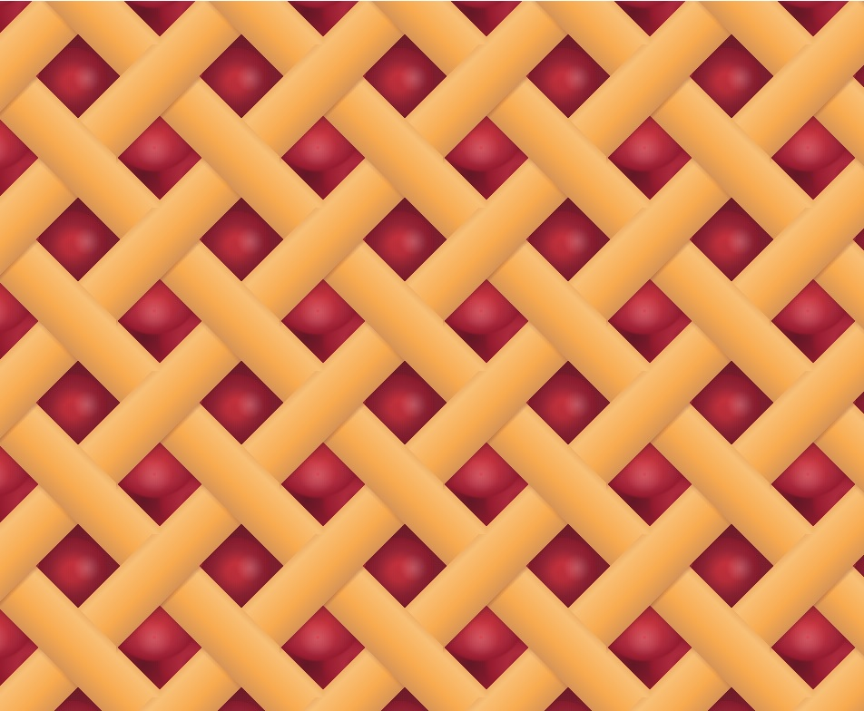

Woman spends too much time on Codepens despite advice; no plans to stop
Sometimes, Internet users land themselves in an uncommon situation where an app or website can be used for both work and personal situations. Well, a young front-end designer was spending up to 13 hours on the site, Codepen for work and her hobby, which unfortunately, is also coding.
The designer, whose work includes a To-Do Terrarium, clarified, "Well, I didn't have to use it for work but it was already part of my workflow.
The designer, whose work includes a To-Do Terrarium, clarified, "Well, I didn't have to use it for work but it was already part of my workflow.
It just made sense as it was more efficient." The biggest issue, she said, is that she would hop on Codepen for work, but would get distracted by pens made by others in the community for unexpectedly long periods of time, which then causes her to spend even more time on the site.
"I mean, that's terrible right?" she asked. Codepen, which brands itself as the best place to build, test, and discover front-end code, has declined to comment at this time.


Can you get inspired to make your own floor plans?
Making a floor Plan with CSS Grid? Talk about using the wrong tool for the job. But I guess this is what happens when someone isn't happy with any of the floor plans found on Pinterest; she'll start making her own for the eventual home that she will never own. Nevertheless, there's a home office with a large window to look out of pensively during rainy days and a ton of "white space" for the cats to run around.
A pasta menu
Everybody loves pasta. It's impossible to not love them, so here are 15 recipes, served with GSAP. Note the easter egg — the menu icon changes according to the pasta that you choose.Marvel at a magazine
A tribute of sorts to an era of cool superhero movies, this is a Marvel-themed magazine! Recommended, because it took 45 hours, so you know some serious dedication has been poured into this.Let's adopt, don't shop.
Explore a style guide and various page layouts for a pet adoption site in the Style Guide collection. Inspired by the Atomic Design principle, this 8-pen collection includes a 404 page concept, an admin dashboard and what a Twitter user calls a 'media card zen garden'. Each pen comes with five (yes, five) color themes, including the precious dark mode.
Toggles
Eight playful toggles to toggle on and off for your amusement. Is it possible to use these on your site and still adhere to assessibility rules? No. But there's a really cute dog one you have to see.
WORLD NEWS
Looks like Covid-19 is gonna be around for a while so here is another friendly reminder to practice social distancing. Oh, and wear a mask!
Hot this month

FOOD
Pies for everyone
No man is left behind. There's infinite pie with this one div and a repeating background.Frustrated designer runs amok with Captcha ideas
Frustrated designer runs amok with Captcha ideas From Tic Tac Toe to solving meme-based questions, this is a different take on how web captchas should be. "I have not successfully picked out all photos of a truck on the first try. Something's gotta change," says the designer, who has requested to remain anonymous.
Slack UI gets reverse engineered
Another valiant effort to reverse engineer a web app. However, the UI is repurposed to showcase Codepens instead of mock conversations. This is a codepen showcase inception situation
Always failing to keep track of your workouts?